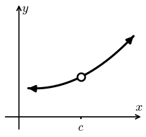
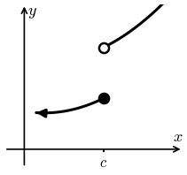
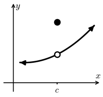
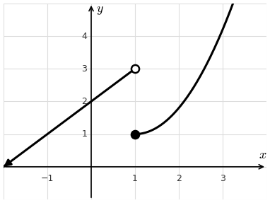
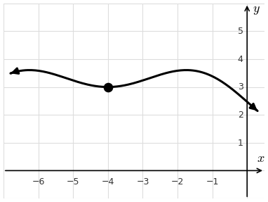

Lesson 7: Continuity
1. \(f(c)\) is undefined.

2. \(\displaystyle\lim_{x \to c} f(x)\) does not exist.

3. \(\displaystyle\lim_{x \to c} f(x) \neq f(c)\).

A function is continuous when it is not discontinuous. That is, for \(f(x)\) to be continuous at \(x = c\), we need to avoid these three possibilities.
Continuity at \(x = c\)
- \(f(c)\) is defined
- \(\displaystyle\lim_{x \to c} f(x)\) exists
- \(\displaystyle\lim_{x \to c} f(x) = f(c)\)
The graph of \(f(x)\) is given. Evaluate each of the following. Then decide whether \(f(x)\) is continuous at \(x = 1\).
The one-sided limits are different, so \(\displaystyle\lim_{x \to 1} f(x)\) does not exist. The function is not continuous at \(x = 1\).

The graph of \(f(x)\) is given. Evaluate each of the following. Then decide whether \(f(x)\) is continuous at \(x = -4\).
All four agree, so the function is continuous at \(x = -4\).

Idea: For a function to be continuous, all four of these must have the same answer.
Decide whether the function below is continuous at \(x = 0\).
The one-sided limits are different, so \(\displaystyle\lim_{x \to 0} f(x)\) does not exist. The function is not continuous at \(x = 0\).